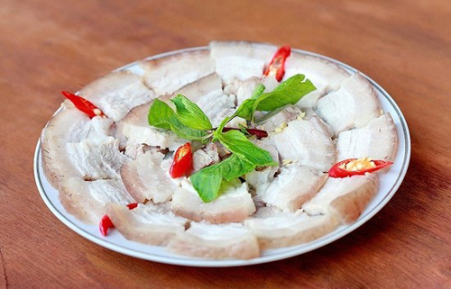

Công thức nấu thịt luộc
Thịt luộc là món ăn phổ biến trong bữa cơm của người nghèo. Để chuẩn bị nấu món thịt luộc, cần chuẩn bị như sau:

Chuẩn bị
500gr thịt 3 chỉ
Bột canh
Mắm
Ớt
Cách nấu
- Rửa sạch thịt
- Cho nước sạch đủ dùng vào nồi
- Cho thịt, 1 thìa mắm, 1 thìa bột canh
- Đun sôi 5 phút, ngâm 10 phút